|
Rio Branco - Ac
Area: 8,836 km²
População: 413,418
|
Macapá - Ap
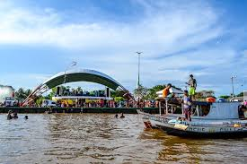
Area: 6,407 km²
População: 512,902
|
Manaus - AM
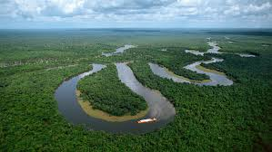
Area: 11,401 km²
População: 2.02 mi
|
Porto Velho - RO
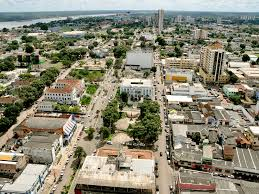
Area: 34,091 km²
População: 539,354
|
Boa Vista - RR
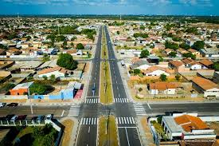
Area: 224,298 km²
População: 419,652
|
Palmas - TO
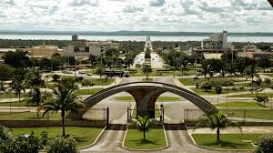
Area: 2,218 km²
População: 306,296
|
Belém - PA
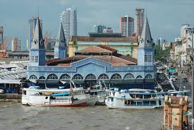
Area: 1,059 km²
População: 1,499,641
|
|
Recife - PE
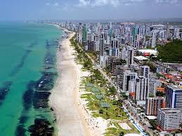
Area: 218 km²
População: 1,555 mi
|
Teresina - PI
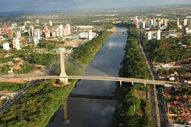
Area: 1,392 km²
População: 868,075
|
Salvador - BA
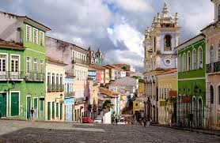
Area: 693 km²
População: 2,886,698
|
Fortaleza - CE
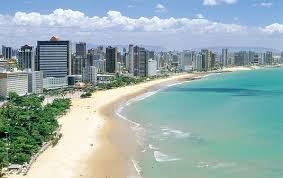
Area: 313 km²
População: 2,687 mi
|
Maceió - AL
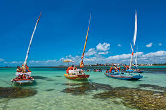
Area: 509,552 km²
População: 1,025 mi
|
João Pessoa - PB
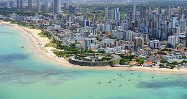
Area: 211 km²
População: 817,511
|
Natal - RN
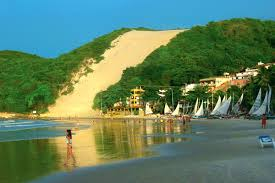
Area: 167 km²
População: 890,480
|
Aracajú - Se
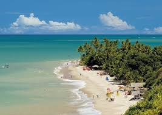
Area: 181,857 km²
População: 664,908
|
São Luis - MA
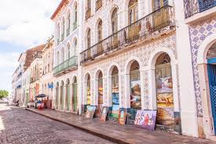
Area: 834 km²
População: 1,109 mi
|
|
Goiânia - GO
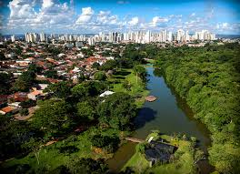
Area: 789 km²
População: 1,536,097
|
Cuiabá - MT
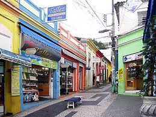
Area: 3,291,816 km²
População: 618,124
|
Campo Grande - MS
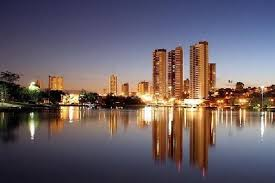
Area: 8,096 km²
População: 796,252
|
Brasília - DF
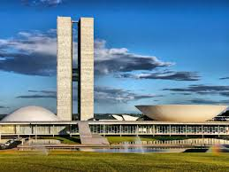
Area: 5,802 km²
População: 3,039,444
|
|
Vitória - ES
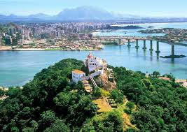
Area: 93 km²
População: 365,855
|
Belo Horizonte - MG
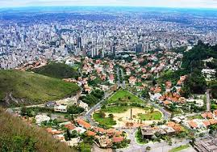
Area: 330 km²
População: 2,722 mi
|
Rio de Janeiro - RJ
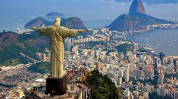
Area: 1,221 km²
População: 6,747,815
|
São Paulo - SP

Area: 1,521 km²
População: 12,33 mi
|
|
Curitiba - PR
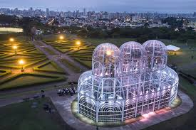
Area: 432 km²
População: 3,400,100
|
Florianópolis - SC
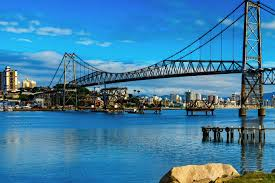
Area: 675.409 km²
População: 508,826
|
Porto Alegre - RS
Area: 496 km²
População: 1,488,252
|